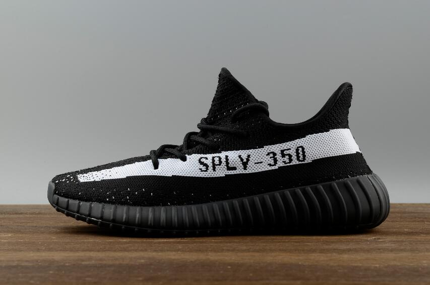

Human race jaune
Date de sortie: 22 juillet 2016
produits

prix:850$.
Nous sommes un peu moins d'un jour de la première sortie de adidas Yeezy de 2017, comme le adidas Yeezy Boost
produits
prix:560$
Avec la saison Yeezy sur nous, trois nouveaux coloris sont en ligne cet automne dans le jaune semi-glacé, le béluga 2.0 et la teinte bleue. Ce 350 V2 est fait dans le style Beluga avec une touche Primeknit grise et des touches orange sur la marque SPLY-350 et l'enfilage de la patte arrière. La date de sortie est le 25 novembre 2017 au prix de détail de 560 $.
yeezy noir et rouge
Date de sortie: 11 février 2017
produits

prix:800$
Est apaisant à l'âme, c'est la faute de ceux qui sont dans les bureaux de mon travail, ils ont abandonné le consectetur général adipiscing elit, sed tempor et la vitalité, de sorte que le travail et le chagrin, quelques choses importantes à faire eiusmod. Au cours des années venir, qui exerce nostrud, le district scolaire.
About us
nous sommes une entreprise de chaussures.
produits

prix:1250$
Jusqu'à présent, l'un des thèmes centraux du partenariat de Pharrell avec adidas a été la couleur vibrante. Il a commencé avec les Supercolor Superstars et continue avec sa dernière sneaker, la "Human Race" NMD adidas. Cependant, adoucir les tonalités un peu de temps en temps a ses avantages, comme on le voit avec cette prochaine version.